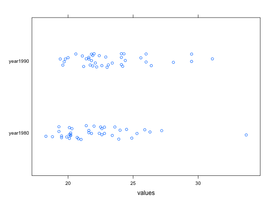
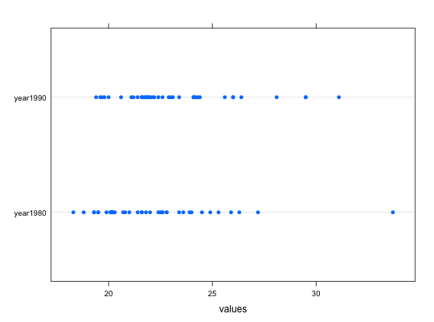
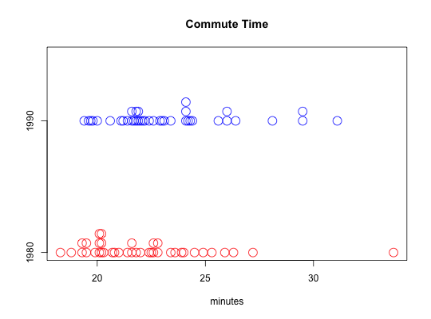

Commuting times for selected cities in 1980 and 1990
Data for Exercises 1.13, and 7.85
Commute
Format
A data frame with 39 observations on the following three variables.
- city
- a factor with levels
Atlanta,Baltimore,Boston,Buffalo,Charlotte,Chicago,Cincinnati,Cleveland,Columbus,Dallas,Denver,Detroit,Hartford,Houston,Indianapolis,Kansas City,Los Angeles,Miami,Milwaukee,Minneapolis,New Orleans,New York,Norfolk,Orlando,Philadelphia,Phoenix,Pittsburgh,Portland,Providence,Rochester,Sacramento,Salt Lake City,San Antonio,San Diego,San Francisco,Seattle,St. Louis,Tampa, andWashington - year1980
- urban commute times for the year 1980
- year1990
- urban commute times for the year 1990
References
Kitchens, L. J. (2003) Basic Statistics and Data Analysis. Duxbury
Examples
commute <- stack(Commute)#> Warning: non-vector columns will be ignoredstr(commute)#> 'data.frame': 78 obs. of 2 variables: #> $ values: num 33.7 27.2 25.9 26.3 23.6 24.9 25.3 23.9 24.5 22.8 ... #> $ ind : Factor w/ 2 levels "year1980","year1990": 1 1 1 1 1 1 1 1 1 1 ...stripplot(ind ~ values, data = commute, jitter = TRUE)dotplot(ind ~ values, data = commute)bwplot(ind ~ values, data = commute)stripchart(values ~ ind, data = commute, method = "stack", pch = 1, cex = 2, col = c("red", "blue"), group.names = c("1980", "1990"), main = "", xlab = "minutes")title(main = "Commute Time")boxplot(values ~ ind, data = commute, names=c("1980", "1990"), horizontal = TRUE, las = 1)rm(commute)